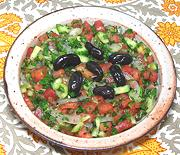

|
Shepherd's SaladTurkey - Çoban Salatasi | ||||
| Serves: Effort: Sched: DoAhead: |
5 salad ** 1 hr Yes |
This is the most popular salad in Turkey, served everywhere salad is served. It'a a delicious combination that can be made hours ahead, up to dressing. | |||
|
------ 1 4 4 1 3 6 1/3 ------ 2 2 1/4 ------ |
--- # oz oz t oz c --- T T t --- |
-- Salad Tomatoes Cucumbers (2) Onion Salt Armenian Pepper (3) Mint sprigs Parsley, flat -- Dressing Lemon Juice Olive Oil ExtV Salt -- Garnish Olives, Black (4) |
This salad is durable on the buffet table because there are no greens likely to wilt. Salad - (25 min + 30 min chill time)
|
tgv_tomat1 090711 tcnh114 - www.clovegarden.com
©Andrew Grygus - agryg@clovegarden.com - Linking to
and non-commercial use of this page permitted